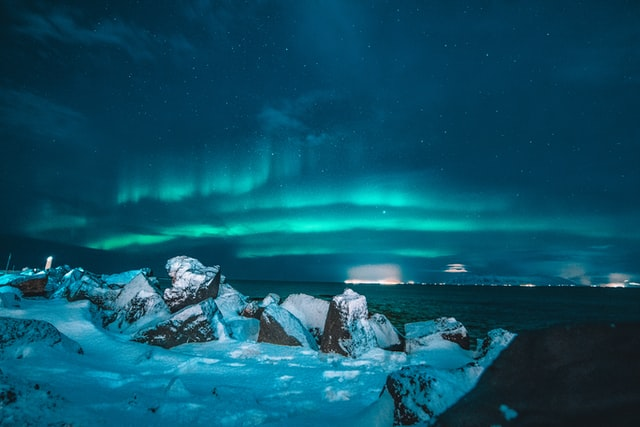

Astronomia
¡Conoce mas de la Astronomia!
La naturaleza es un concepto utilizado para referirse al mundo material o universo material, incluyendo los fenómenos del mundo físico, la materia inerte generada como parte de procesos sin la intervención humana, y al fenómeno de la vida, que incluye también a los humanos. >A menudo se contrapone el término «naturaleza» a otros términos relacionados con la actividad humana, como «sociedad», «cultura» o «intervención humana». Por ejemplo, se considera «entorno natural» a todos aquellos componentes de un determinado paisaje que no han sido alterados sustancialmente por el ser humano o que persisten a pesar de la intervención humana Astronomía, cuya raíz viene del latín y el griego 'astron' (estrellas) y 'nomia' (normal o regla), es la rama de la ciencia que se encarga de estudiar las estrellas, satélites, planetas… Y en definitiva todos los cuerpos que existen en el universo y la forma en la que se relacionan entre sí.

Hay mas vida afuera de la tierra

Con el apoyo de otras ciencias
Astrofísica
como la física, la astrofísica, la química, la biología, geología o climatología, la astronomía puede analizar todos los fenómenos que ocurren en el Universo y conocer de qué manera podrían estos afectar a nuestro planeta. Gracias al estudio de las leyes que rigen el movimiento de todos los cuerpos celestes conocemos interesantes conclusiones del universo que nos rodea, por ejemplo, que se encuentra en continua expansión.
Enanas rojas
saber mas